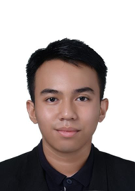

Ashraf Harith bin Abdul Halim


Professional Background: I am a dedicated foundation student at Universiti Utara Malaysia with a strong academic standing and proven leadership experience. My journey has equipped me with skills in research, problem-solving, and effective communication, developed through coursework, school leadership roles, and extracurricular involvement. I have a keen interest in the legal, administrative, and education sectors, and I am committed to applying my knowledge to real-world challenges. Through an internship, I aim to gain practical exposure, contribute meaningfully to organizational goals, and continue developing as a well-rounded professional.
Career Objectives: To secure an internship position in the legal, administrative, or education sector where I can apply my research, problem-solving, and communication skills while gaining practical experience. I aim to contribute positively to the organization’s success, develop my professional capabilities, and build a strong foundation for a future career in law and related fields.
Contact Information:
No77 Taman Permata, Alor Setar, Kedah, Malaysia
+60 12-400 7789
harithaashraf8@gmail.com
LinkedIn: linkedin.com/in/asha_rith8
GitHub/Portfolio: github.com/Ash40869

Blog + Vlog
Discovering My Path: A Journey Through Leadership and Learning
Hello, I'm Ashraf Harith bin Abdul Halim, a foundation student at Universiti Utara Malaysia (UUM) pursuing Studies in Management. Growing up in Alor Setar, Kedah, I've always been driven by a passion for problem-solving and helping others succeed. My academic journey kicked off with straight As in my SPM at Kolej Sultan Abdul Hamid, where I scored A+ in subjects like Bahasa Melayu, English, and Principles of Accounting. This foundation built my confidence in communication and analytical thinking—skills I've carried into university coursework like Introduction to ICT and Principles of Management.
Beyond academics, leadership has shaped who I am. As Prefectorial Board Secretary, Chairman of Kadet Remaja Sekolah, and Chairman of the Cooperative Club, I learned to organize events, motivate teams, and handle responsibilities under pressure. These roles weren't just titles; they were opportunities to grow. For instance, coordinating school activities taught me the importance of empathy in teamwork—listening to diverse perspectives leads to better outcomes.
I'm passionate about the legal, administrative, and education sectors because they allow me to apply research and communication to real-world challenges. Currently, I'm seeking an internship to bridge theory with practice, contributing to dynamic teams while building my career in law-related fields.
Lessons learned: Persistence is key—balancing studies with extracurriculars showed me that time management isn't just a skill; it's a mindset (Covey, 2020). Failures, like a group project hiccup, taught resilience: Adapt and learn from setbacks. Watch my vlog below for a quick personal intro and why these experiences excite me about the future!
References
Covey, S. R. (2020). The 7 habits of highly effective people. Simon & Schuster.
Building Expertise: Insights from My Work and Leadership Experiences
As a motivated UUM foundation student, my expertise centers on communication, organization, and problem-solving—honed through part-time roles and leadership positions. In my part-time tutor role at Pusat Tusyen Inspirasi (February-June 2025), I planned engaging English lessons, created customized worksheets, and tracked student progress. This experience sharpened my ability to adapt teaching to individual needs, turning complex concepts into digestible insights. Similarly, as a part-time admin assistant at Ramli, Amrjit & Tan (March-June 2025), I managed calls, scheduled appointments, and handled client correspondence. These tasks built my administrative skills, emphasizing precision and professionalism in fast-paced environments.
My school leadership roles amplified this expertise. As Chairman of Kadet Remaja Sekolah and the Cooperative Club, I organized events and led teams, fostering collaboration and innovation. In university projects, like the Group Management Assignment, I led a 5-member team to simulate a company plan, covering budgeting and performance tracking. The Leadership & Communication Workshop I co-organized helped peers build teamwork and public speaking—mirroring my own growth.
These experiences showcase my technical skills (e.g., Microsoft Office, Canva) and soft skills (e.g., critical thinking, teamwork), relevant to legal/admin/education sectors. Insights gained: Effective communication bridges gaps—providing constructive feedback in tutoring improved outcomes dramatically. Also, embracing diversity in teams, as in the Orientation Week Committee for 200+ students, drives creativity (Robbins & Judge, 2022).
Lessons learned: Adaptability is crucial; a challenging admin task taught me to prioritize under pressure. Always seek feedback—it's the fastest path to improvement. Check out my vlog for a deeper dive into a real work story and how these skills prepare me for internships!
References
Robbins, S. P., & Judge, T. A. (2022). Organizational behavior. Pearson.